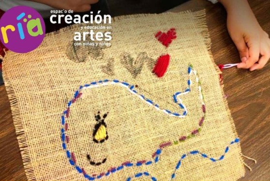
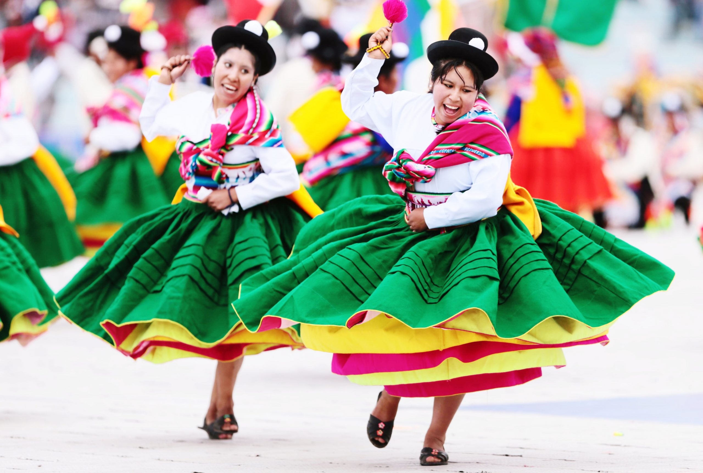
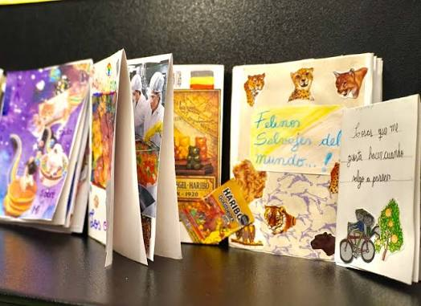
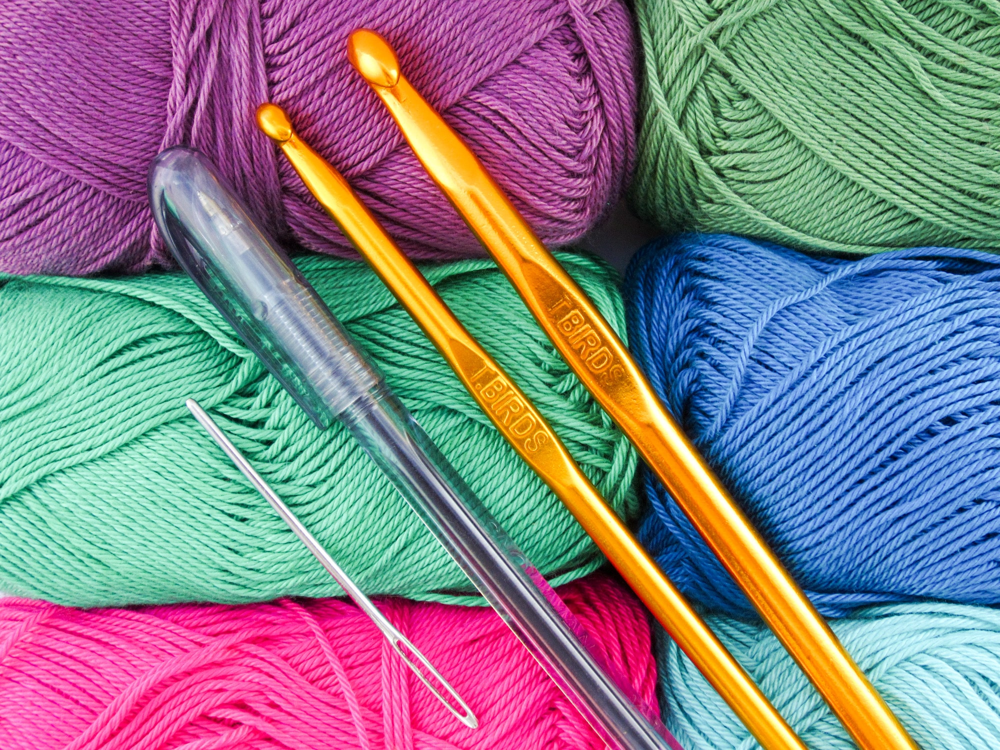
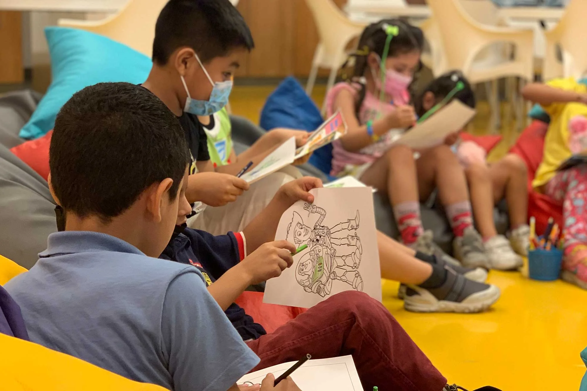
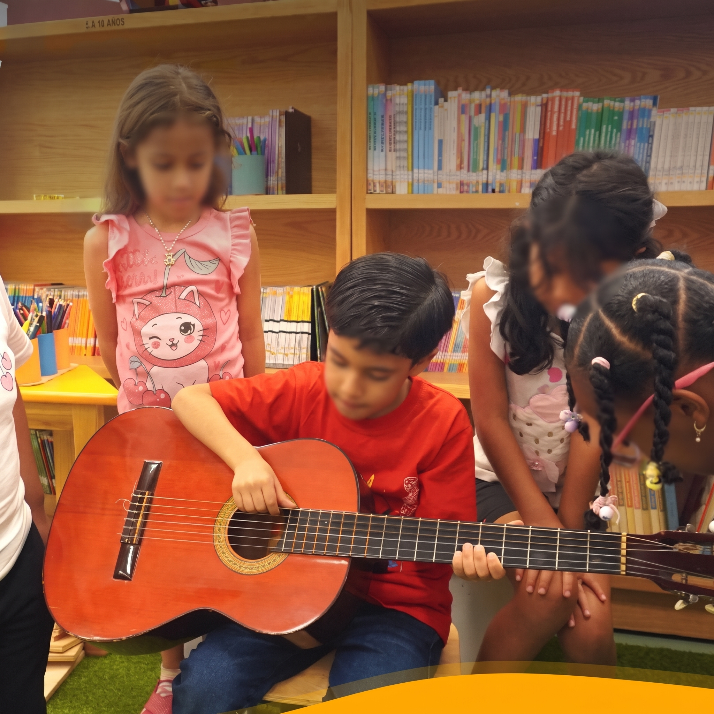
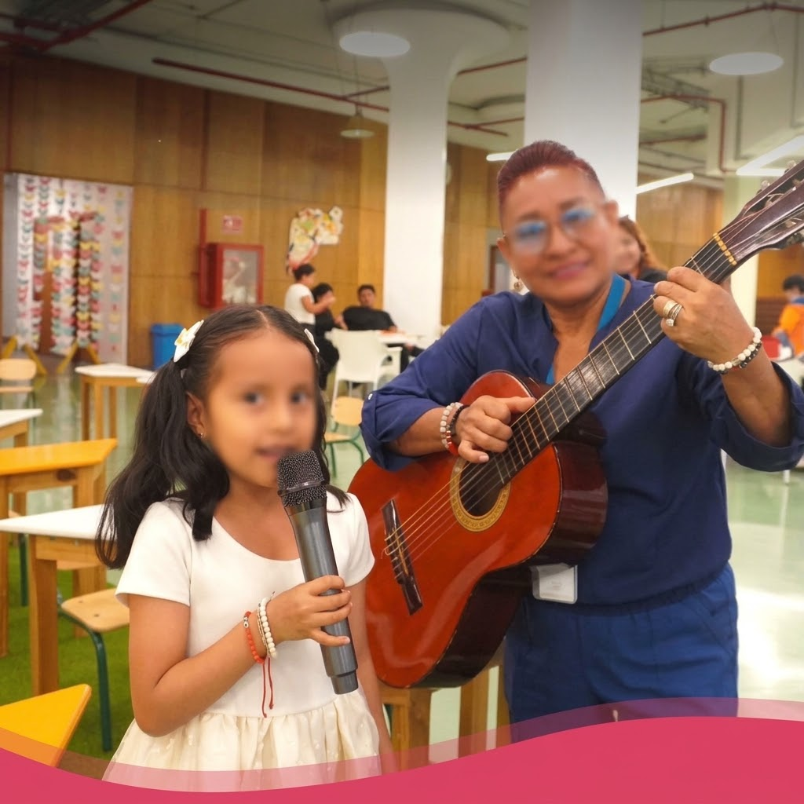
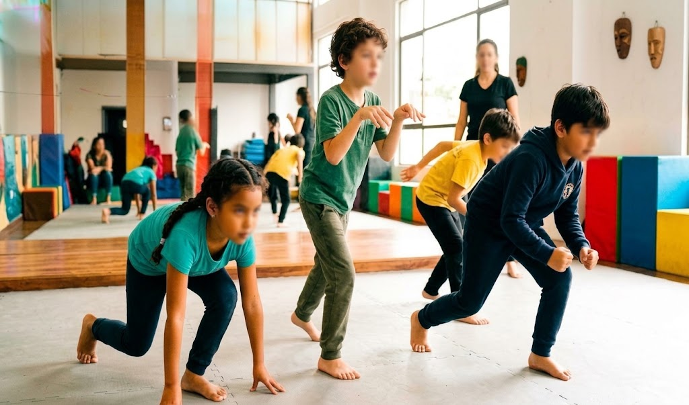

Talleres creativos

Un hilo, dos generaciones (taller textil y bordado)
¡Aprende el arte del bordado! En este taller exploraremos las técnicas básicas de costura y bordado a mano, promoviendo el encuentro intergeneracional entre niñas, niños y sus abuelxs o cuidadores. Un espacio para tejer lazos, memoria y creatividad a través del hilo y la aguja.
Público: Familiar e intergeneracional · Lugar: Sala Ría

Taller de Danzas Andinas
¡A mover el cuerpo al ritmo de nuestras raíces! Conoce las manifestaciones corporales y culturales de las danzas tradicionales andinas. A través del juego, la música y el movimiento, lxs participantes reconectarán con la memoria ancestral y la expresión corporal.
Público: Infantil y juvenil · Lugar: Sala Ría

Mi primer Fanzine
¿Tienes una historia que contar? En «Mi primer Fanzine» aprenderás a diseñar, ilustrar y plegar tu propia publicación artesanal de forma autónoma y divertida. ¡Transforma tus ideas, dibujos y poemas en un librito único!
Público: Niños y adolescentes · Lugar: Sala Ría

Pixel Art en Crochet
Donde la era digital se encuentra con el tejido tradicional. Aprende la técnica de Pixel Art aplicada al crochet para crear personajes, figuras y patrones inspirados en la estética de los videojuegos clásicos usando lana y aguja.
Público: Jóvenes y adultos · Lugar: Sala Ría / Talleres

Entre Cuentos y Colores (plastilina y química con cúrcuma y bicarbonato)
¡Una experiencia mágica donde el arte se mezcla con la ciencia! Iniciamos con la lectura compartida de cuentos ilustrados, seguida del modelado de personajes en plastilina y un fascinante experimento de «pintura mágica» usando reacciones químicas entre cúrcuma, agua y bicarbonato.
Público: Niños de 4 a 10 años · Lugar: Sala Ría

Taller Creativo de Dibujo
Espacio dedicado al desarrollo de habilidades de ilustración, encuadre y uso de luces y sombras. Los participantes explorarán diferentes materiales como carboncillo, lápices graduados y tinta china para plasmar su imaginación en el papel.
Público: Público general y principiantes
Música y expresión escénica

Acordes en Acción (taller de guitarra)
Iniciación práctica a la guitarra acústica. Aprenderás posturas básicas, cifrado, acordes fundamentales y ritmos para acompañar tus canciones favoritas en un ambiente dinámico y grupal.
Público: Principiantes · Lugar: Biblioteca de las Artes

Taller de Canto Popular
Descubre y entrena tu voz. Abordaremos técnicas de respiración diafragmática, vocalización, afinación e interpretación de géneros musicales populares y tradicionales ecuatorianos.
Público: Jóvenes y adultos

El Cuerpo Animal (taller de teatro)
Exploración escénica basada en el movimiento y la corporalidad animal. A través de dinámicas de actuación, el participante usará su cuerpo como herramienta principal para la creación de personajes teatrales e improvisación.
Público: Jóvenes y adultos